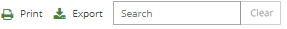

is clicked, a duplicate version of the document appears in the screen to the left. By default, the Web Viewer tab displays. Any one of the tabs may be selected in either screen. Click to close the second screen.
is clicked, a duplicate version of the document appears in the screen to the left. By default, the Web Viewer tab displays. Any one of the tabs may be selected in either screen. Click to close the second screen.The same document may be viewed in split screens by clicking located at the end of Tabs toolbar as shown in the following figure.

When is clicked, a duplicate version of the document appears in the screen to the left. By default, the Web Viewer tab displays. Any one of the tabs may be selected in either screen. Click to close the second screen.
The split screens will reflect the current document that is loaded when advancing through the review process.